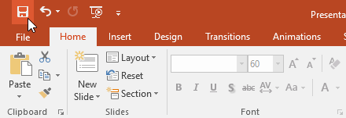
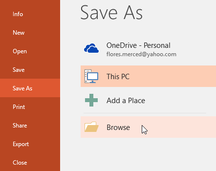
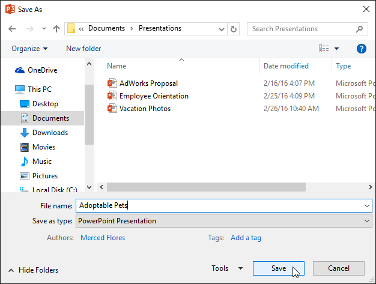
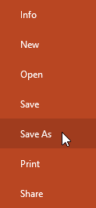
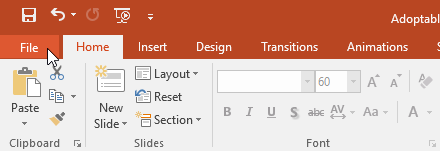
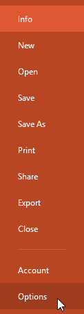
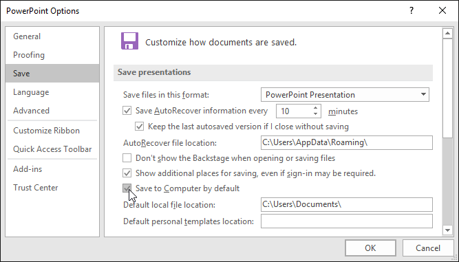

Ori de câte ori creați o nouă prezentare în PowerPoint, va trebui să știți cum să salvați pentru a o accesa și edita mai târziu. Ca și în versiunile anterioare de PowerPoint, puteți salva fișiere pe computer. Dacă preferați, puteți salva fișiere în cloud folosind OneDrive. Puteți chiar să exportați și să partajați prezentări direct din PowerPoint.
Salvați și salvați caPowerPoint oferă două moduri de a salva un fișier: Salvare și Salvare ca. Aceste opțiuni funcționează în moduri similare, cu câteva diferențe importante.
Este important să vă salvați prezentarea ori de câte ori începeți un proiect nou sau faceți modificări unuia existent. Economisirea devreme și des poate preveni pierderea muncii dvs. De asemenea, va trebui să acordați o atenție deosebită locului în care salvați prezentarea, astfel încât să fie ușor de găsit mai târziu.



Dacă doriți să salvați o versiune diferită a unei prezentări păstrând originalul, puteți crea o copie. De exemplu, dacă aveți un fișier numit Prezentare client, îl puteți salva ca Prezentare client 2, astfel încât să puteți edita noul fișier și să vă referiți în continuare la versiunea originală.
Pentru a face acest lucru, veți face clic pe comanda Salvare ca în vizualizarea Backstage. La fel ca atunci când salvați un fișier pentru prima dată, va trebui să alegeți unde să salvați fișierul și să îi dați un nume de fișier nou.

Pentru a schimba locația implicită de salvare:Dacă nu doriți să utilizați OneDrive, este posibil să fiți frustrat că OneDrive este selectat ca locație implicită la salvare. Dacă găsiți acest lucru incomod, puteți schimba locația implicită de salvare, astfel încât Acest computer să fie selectat în mod implicit.


